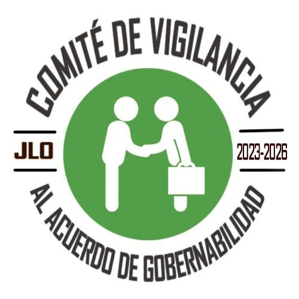
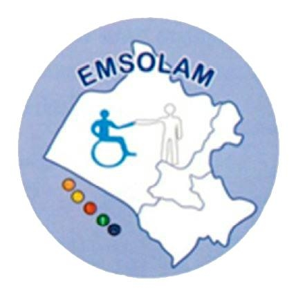
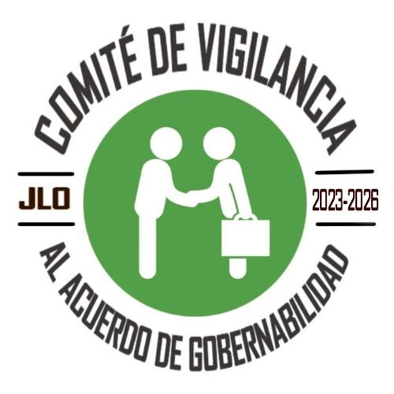
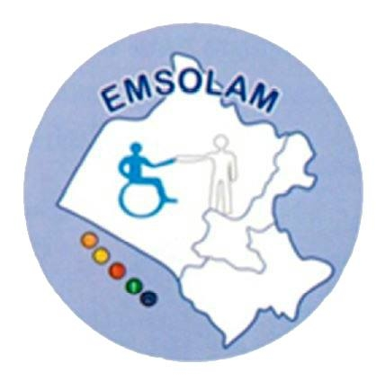
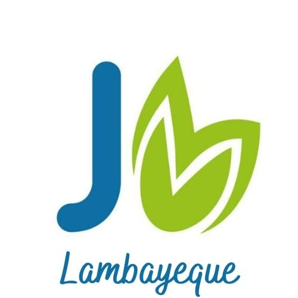
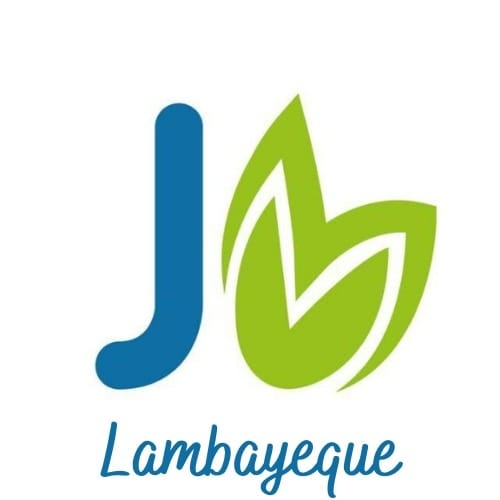

Construyendo organizaciones íntegras y transparentes
Acompañamos a instituciones públicas y privadas en la implementación de sistemas robustos de integridad, transparencia y prevención de la corrupción.
Nuestros servicios
Soluciones integrales para fortalecer la cultura de integridad en su organización
Sistemas de Integridad
Diseño e implementación de sistemas de gestión de integridad adaptados a su organización
Capacitación
Programas de formación para equipos en ética, compliance y prevención de corrupción
Auditorías
Evaluación independiente de controles internos y procesos de transparencia
Análisis de Riesgos
Identificación y mapeo de riesgos de corrupción y conflictos de interés
Compliance
Implementación de programas de cumplimiento normativo y mejores prácticas
Certificaciones
Acompañamiento en procesos de certificación internacional en integridad
¿Qué son los Estándares de Integridad?
Los Estándares de Integridad son un conjunto de parámetros de actuación y cumplimiento que buscan gestionar y mitigar riesgos en la obra pública, promoviendo la transparencia, integridad y accesibilidad en todas las fases de la contratación y ejecución.
Esta metodología ha sido desarrollada con el apoyo de USAID a través del Proyecto Inversión Pública Transparente, y es implementada por el Instituto Buen Gobierno e Integridad junto a la Red de Integridad Lambayeque y EMSOLAM.
Estándares de Integridad
Expediente Técnico de Calidad
Elaboración del ETO con criterios de calidad, eficiencia y costo razonable, incluyendo estándares de accesibilidad.
Publicación Oportuna
Publicación completa y oportuna de la convocatoria en plataformas de transparencia pública.
Competencia y Transparencia
Fomento de la competencia y transparencia en el procedimiento de selección.
Contrato Conforme
Suscripción y publicación del contrato conforme a la normativa vigente.
Supervisión Permanente
Supervisión permanente para garantizar la calidad y continuidad de la obra.
Adicionales Justificados
Justificación oportuna de adicionales y/o ampliaciones para garantizar la finalidad pública.
Corrección de Situaciones Adversas
Corrección de situaciones adversas identificadas en informes de control.
Recepción Conforme
Recepción de la obra conforme al expediente técnico para su puesta en servicio.
Instituciones Colaboradoras
¿Quieres implementar los Estándares de Integridad?
Descarga las guías completas y comienza a promover la transparencia e integridad en las obras públicas de tu región.
Descargar Guías Completas
 



 
